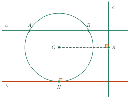
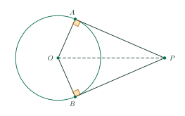

Relative Positions of a Line and a CircleVị trí tương đối của đường thẳng và đường tròn
Grade 9 · Topic: CirclesLớp 9 · Chủ đề: Đường tròn
1Lesson IntroductionGiới thiệu bài học
Learning goalsMục tiêu bài học
By the end of this lesson you can:
Sau bài học này, em có thể:
describe the three positions of a line and a circle using \(d\) and \(R\);
mô tả được ba vị trí tương đối của đường thẳng và đường tròn qua hệ thức giữa \(d\) và \(R\);
recognize a tangent and use the property “tangent ⟂ radius”;
nhận biết được tiếp tuyến và dùng tính chất “tiếp tuyến vuông góc với bán kính tại tiếp điểm”;
use the property of two tangents from one point;
vận dụng được tính chất của hai tiếp tuyến cắt nhau;
compute tangent lengths and chord lengths with the Pythagorean theorem.
tính được độ dài tiếp tuyến, độ dài dây bằng định lí Pythagore.
2Mathematical VocabularyTừ vựng Toán học
secant – a line with two common points with the circle.
Cát tuyến – đường thẳng có hai điểm chung với đường tròn.
tangent / point of tangency – a line with exactly one common point / that point.
Tiếp tuyến / tiếp điểm – đường thẳng có đúng một điểm chung / điểm chung đó.
distance from a point to a line – the length \(d=OH\) of the perpendicular from \(O\).
Khoảng cách từ một điểm đến một đường thẳng – độ dài \(d=OH\) của đoạn vuông góc kẻ từ \(O\).
perpendicular – \(OA\perp a\): the radius meets the tangent at a right angle.
Vuông góc – \(OA\perp a\): bán kính vuông góc với tiếp tuyến.
tangent segments – \(PA\), \(PB\) drawn from the same point \(P\); \(PA=PB\).
Hai tiếp tuyến cắt nhau – \(PA\), \(PB\) kẻ từ cùng một điểm \(P\); \(PA=PB\).
3Useful English PhrasesCụm từ tiếng Anh thường gặp
The line \(d\) is tangent to the circle at \(A\).
Đường thẳng \(d\) tiếp xúc với đường tròn tại \(A\).
The radius is perpendicular to the tangent at the point of tangency.
Bán kính vuông góc với tiếp tuyến tại tiếp điểm.
Since \(PA\) is tangent to the circle at \(A\), \(OA\perp PA\).
Vì \(PA\) là tiếp tuyến của đường tròn tại \(A\) nên \(OA\perp PA\).
Therefore, triangle \(OAP\) is a right triangle.
Do đó tam giác \(OAP\) vuông tại \(A\).
The two tangent segments drawn from the same external point are equal.
Hai tiếp tuyến cắt nhau tại một điểm thì điểm đó cách đều hai tiếp điểm.
4Prerequisite ReviewÔn tập kiến thức nền
Pythagorean theorem. In a right triangle, (hypotenuse)\(^2\) = sum of the squares of the legs.
Định lí Pythagore. Trong tam giác vuông, bình phương cạnh huyền bằng tổng bình phương hai cạnh góc vuông.
Lesson 14. The perpendicular from \(O\) to a chord bisects the chord.
Bài 14. Đường vuông góc kẻ từ \(O\) đến một dây đi qua trung điểm của dây đó.
5TheoryLý thuyết
5.1 Three relative positionsBa vị trí tương đối của đường thẳng và đường tròn

| PositionVị trí tương đối | Common pointsSố điểm chung | RelationHệ thức |
|---|---|---|
| the line cuts the circle (secant)cắt nhau (cát tuyến) | 2 | \(d\lt R\) |
| the line is tangent to the circletiếp xúc nhau (tiếp tuyến) | 1 | \(d=R\) |
| they have no common pointkhông giao nhau | 0 | \(d\gt R\) |
NotesGhi nhớ
Here \(d=OH\) is the distance from the center \(O\) to the line (\(H\) is the foot of the perpendicular).
Ở đây \(d=OH\) là khoảng cách từ tâm \(O\) đến đường thẳng (\(H\) là chân đường vuông góc).
When the line cuts the circle at \(A\), \(B\): \(H\) is the midpoint of \(AB\) and \(AH=\sqrt{R^2-d^2}\).
Khi đường thẳng cắt đường tròn tại \(A\), \(B\): \(H\) là trung điểm của \(AB\) và \(AH=\sqrt{R^2-d^2}\).
5.2 TangentsTiếp tuyến của đường tròn
PropertiesTính chất và dấu hiệu
Property. If \(a\) is tangent to \((O)\) at \(A\), then \(a\perp OA\).
Tính chất. Nếu \(a\) là tiếp tuyến của \((O)\) tại \(A\) thì \(a\perp OA\).
Test. If a line passes through a point \(A\) of the circle and is perpendicular to \(OA\), it is a tangent at \(A\).
Dấu hiệu. Nếu một đường thẳng đi qua điểm \(A\) của đường tròn và vuông góc với bán kính \(OA\) thì nó là tiếp tuyến của đường tròn tại \(A\).

Two tangents from one pointTính chất hai tiếp tuyến cắt nhau
If the tangents at \(A\) and \(B\) meet at \(P\), then \(PA=PB\); \(PO\) bisects \(\widehat{APB}\); \(OP\) bisects \(\widehat{AOB}\).
Nếu hai tiếp tuyến tại \(A\), \(B\) của \((O)\) cắt nhau tại \(P\) thì \(PA=PB\); \(PO\) là tia phân giác của \(\widehat{APB}\); \(OP\) là tia phân giác của \(\widehat{AOB}\).
Reason: right triangles \(OAP\) and \(OBP\) have \(OA=OB\) and the common hypotenuse \(OP\).
Lí do: hai tam giác vuông \(OAP\), \(OBP\) có \(OA=OB\) và chung cạnh huyền \(OP\).
6Worked ExamplesVí dụ có lời giải
ExampleVí dụ 1RememberingNhận biết – Relative positionsXác định vị trí tương đối
Circle \((O;\,6\text{ cm})\). Lines \(a\), \(b\), \(c\) are at distances 4 cm, 6 cm, 8 cm from \(O\). Give the relative position of each line and the circle.
Cho \((O;\,6\text{ cm})\) và các đường thẳng \(a\), \(b\), \(c\) cách \(O\) lần lượt 4 cm, 6 cm, 8 cm. Nêu vị trí tương đối của mỗi đường thẳng với đường tròn.
Analysis: Compare each \(d\) with \(R=6\).
Phân tích: So sánh mỗi \(d\) với \(R=6\).
\(4\lt6\): \(a\) cuts the circle (2 common points). \(6=6\): \(b\) is a tangent (1 common point).
\(4\lt6\): \(a\) cắt đường tròn (2 điểm chung). \(6=6\): \(b\) là tiếp tuyến (1 điểm chung).
\(8\gt6\): \(c\) and the circle have no common point.
\(8\gt6\): \(c\) và đường tròn không giao nhau.
\(a\): secant; \(b\): tangent; \(c\): no common point.
\(a\): cắt nhau; \(b\): tiếp xúc; \(c\): không giao nhau.
ExampleVí dụ 2UnderstandingThông hiểu – Length of a tangentĐộ dài tiếp tuyến
A circle has center \(O\) and radius 5 cm. \(PA\) is tangent to the circle at \(A\) and \(OP=13\) cm.
a) Explain why \(\widehat{OAP}=90^\circ\).
b) Find \(PA\).
Đường tròn tâm \(O\) bán kính 5 cm. \(PA\) là tiếp tuyến của đường tròn tại \(A\) và \(OP=13\) cm.
a) Giải thích vì sao \(\widehat{OAP}=90^\circ\).
b) Tính \(PA\).
Analysis: A tangent is perpendicular to the radius.
Phân tích: Tiếp tuyến vuông góc với bán kính tại tiếp điểm.
a) Since \(PA\) is tangent to the circle at \(A\), \(OA\perp PA\). Therefore, triangle \(OAP\) is a right triangle at \(A\).
a) Vì \(PA\) là tiếp tuyến tại \(A\) nên \(OA\perp PA\). Do đó tam giác \(OAP\) vuông tại \(A\).
b) By the Pythagorean theorem, \(PA^2=OP^2-OA^2=169-25=144\), so \(PA=12\) cm.
b) Theo định lí Pythagore, \(PA^2=OP^2-OA^2=169-25=144\) nên \(PA=12\) cm.
\(PA=12\) cm.
\(PA=12\) cm.
ExampleVí dụ 3UnderstandingThông hiểu – Two tangentsHai tiếp tuyến cắt nhau
In Example 2, a second tangent \(PB\) is drawn from \(P\) (\(B\) on the circle). Find \(PB\) and compare \(\widehat{APO}\) with \(\widehat{BPO}\).
Ở Ví dụ 2, kẻ thêm tiếp tuyến \(PB\) từ \(P\) (\(B\) thuộc đường tròn). Tính \(PB\) và so sánh \(\widehat{APO}\) với \(\widehat{BPO}\).
Analysis: Use the property of two tangents from one point.
Phân tích: Dùng tính chất hai tiếp tuyến cắt nhau.
The two tangent segments drawn from the same external point are equal: \(PB=PA=12\) cm.
Hai tiếp tuyến cắt nhau tại \(P\) nên \(PB=PA=12\) cm.
\(PO\) bisects \(\widehat{APB}\), so \(\widehat{APO}=\widehat{BPO}\).
\(PO\) là tia phân giác của \(\widehat{APB}\) nên \(\widehat{APO}=\widehat{BPO}\).
\(PB=12\) cm; the two angles are equal.
\(PB=12\) cm; hai góc bằng nhau.
ExampleVí dụ 4Basic applicationVận dụng thấp – A chord cut by a lineDây cung tạo bởi cát tuyến
Line \(a\) is 3 cm from the center of \((O;\,5\text{ cm})\). Show that \(a\) cuts the circle at two points \(A\), \(B\) and find \(AB\).
Đường thẳng \(a\) cách tâm của \((O;\,5\text{ cm})\) một đoạn 3 cm. Chứng minh \(a\) cắt đường tròn tại hai điểm \(A\), \(B\) và tính \(AB\).
Analysis: Draw \(OH\perp a\).
Phân tích: Kẻ \(OH\perp a\).
\(d=3\lt5=R\), so \(a\) is a secant. Let \(H\) be the foot of the perpendicular from \(O\); \(H\) is the midpoint of \(AB\).
\(d=3\lt5=R\) nên \(a\) cắt đường tròn tại hai điểm. Gọi \(H\) là chân đường vuông góc kẻ từ \(O\); \(H\) là trung điểm của \(AB\).
\(AH=\sqrt{5^2-3^2}=4\) cm, so \(AB=8\) cm.
\(AH=\sqrt{5^2-3^2}=4\) cm nên \(AB=8\) cm.
\(AB=8\) cm.
\(AB=8\) cm.
ExampleVí dụ 5ApplicationVận dụng – Region between two tangentsPhần hình giữa hai tiếp tuyến
From \(P\), tangents \(PA\), \(PB\) are drawn to \((O;\,5\text{ cm})\) with \(OP=10\) cm.
a) Find \(PA\).
b) Find \(\widehat{AOP}\) and \(\widehat{AOB}\).
c) Find the area of \(OAPB\).
d) Find the area enclosed by \(PA\), \(PB\) and the minor arc \(AB\) (two decimal places).
Từ \(P\) kẻ hai tiếp tuyến \(PA\), \(PB\) tới \((O;\,5\text{ cm})\) với \(OP=10\) cm.
a) Tính \(PA\).
b) Tính \(\widehat{AOP}\) và \(\widehat{AOB}\).
c) Tính diện tích tứ giác \(OAPB\).
d) Tính diện tích phần hình giới hạn bởi \(PA\), \(PB\) và cung nhỏ \(AB\) (làm tròn đến chữ số thập phân thứ hai).
Analysis: Use \(\cos\widehat{AOP}=\dfrac{OA}{OP}\) and the sector area from Lesson 15.
Phân tích: Dùng \(\cos\widehat{AOP}=\dfrac{OA}{OP}\) và diện tích hình quạt ở Bài 15.
a) \(PA=\sqrt{10^2-5^2}=5\sqrt3\) cm.
b) \(\cos\widehat{AOP}=\dfrac{5}{10}=\dfrac12\Rightarrow\widehat{AOP}=60^\circ\); \(\widehat{AOB}=120^\circ\).a) \(PA=\sqrt{10^2-5^2}=5\sqrt3\) cm. b) \(\cos\widehat{AOP}=\dfrac{5}{10}=\dfrac12\Rightarrow\widehat{AOP}=60^\circ\); \(\widehat{AOB}=120^\circ\).
c) \(S_{OAPB}=2\cdot\dfrac12\cdot OA\cdot PA=5\cdot5\sqrt3=25\sqrt3\) cm².
c) \(S_{OAPB}=2\cdot\dfrac12\cdot OA\cdot PA=5\cdot5\sqrt3=25\sqrt3\) cm².
d) Sector \(AOB\): \(\dfrac{\pi\cdot5^2\cdot120}{360}=\dfrac{25\pi}{3}\). Required area \(=25\sqrt3-\dfrac{25\pi}{3}\approx17.12\) cm².
d) Hình quạt \(AOB\): \(\dfrac{\pi\cdot5^2\cdot120}{360}=\dfrac{25\pi}{3}\). Diện tích cần tìm \(=25\sqrt3-\dfrac{25\pi}{3}\approx17{,}12\) cm².
\(5\sqrt3\) cm; \(60^\circ\), \(120^\circ\); \(25\sqrt3\) cm²; about 17.12 cm².
\(5\sqrt3\) cm; \(60^\circ\), \(120^\circ\); \(25\sqrt3\) cm²; khoảng 17,12 cm².
7PracticeBài tập luyện tập
A. Multiple ChoiceA. Trắc nghiệm nhiều lựa chọn
Circle \((O;\,14\text{ cm})\) and a line \(a\) at distance \(d=11.5\) cm from \(O\). What is their relative position?
Cho đường tròn \((O;\,14\text{ cm})\) và đường thẳng \(a\) cách \(O\) một đoạn \(d=11{,}5\) cm. Vị trí tương đối của chúng là gì?
Answer: b. Compare \(d=11.5\) with \(R=14\).
Đáp án b. So sánh \(d=11{,}5\) với \(R=14\).
\(PA\) is tangent to \((O;\,40\text{ cm})\) at \(A\) and \(OP=41\) cm. Find \(PA\).
\(PA\) là tiếp tuyến của \((O;\,40\text{ cm})\) tại \(A\) và \(OP=41\) cm. Tính \(PA\).
Answer: b. \(OA\perp PA\), so \(PA=\sqrt{OP^2-OA^2}=\sqrt{41^2-40^2}=9\) cm.
Đáp án b. \(OA\perp PA\) nên \(PA=\sqrt{OP^2-OA^2}=\sqrt{41^2-40^2}=9\) cm.
\(B\) lies on \((O;\,6\text{ cm})\). A line \(a\) is tangent to the circle at \(B\) when…
\(B\) nằm trên \((O;\,6\text{ cm})\). Đường thẳng \(a\) là tiếp tuyến của đường tròn tại \(B\) khi…
Answer: b. A line through a point of the circle, perpendicular to the radius at that point, is a tangent.
Đáp án b. Đường thẳng đi qua một điểm của đường tròn và vuông góc với bán kính đi qua điểm đó là tiếp tuyến.
B. True or FalseB. Đúng hoặc sai
Line \(a\) is at distance 4 cm from the center of \((O;\,4\text{ cm})\). Then \(a\) and the circle have exactly 1 common point.
Đường thẳng \(a\) cách tâm của \((O;\,4\text{ cm})\) một đoạn 4 cm. Khi đó \(a\) và đường tròn có đúng 1 điểm chung.
True. \(d=4\), \(R=4\): exactly one common point.
Đúng. \(d=4\), \(R=4\): có 1 điểm chung.
From \(P\) outside \((O;\,12\text{ cm})\), tangents \(PA\), \(PB\) are drawn (\(A\), \(B\) on the circle) and \(PA=9\) cm. Then \(PB=12\) cm.
Từ điểm \(P\) nằm ngoài \((O;\,12\text{ cm})\) kẻ hai tiếp tuyến \(PA\), \(PB\) (\(A\), \(B\) là tiếp điểm) và \(PA=9\) cm. Khi đó \(PB=12\) cm.
False. The two tangent segments from one point are equal: \(PB=PA=9\) cm.
Sai. Hai tiếp tuyến cắt nhau tại \(P\) thì \(PA=PB=9\) cm.
C. Short AnswerC. Trả lời ngắn
Line \(a\) is at distance 12 cm from the center of \((O;\,15\text{ cm})\) and cuts it at \(A\), \(B\). Find \(AB\) (cm).
Đường thẳng \(a\) cách tâm \((O;\,15\text{ cm})\) một đoạn 12 cm và cắt đường tròn tại \(A\), \(B\). Tính \(AB\) (cm).
Enter a number.
Nhập một số.
Answer: 18. \(H\) is the foot of the perpendicular from \(O\): \(AH=\sqrt{15^2-12^2}=9\), \(AB=2AH=18\).
Đáp số: 18. Gọi \(H\) là chân đường vuông góc kẻ từ \(O\): \(AH=\sqrt{15^2-12^2}=9\), \(AB=2AH=18\).
\(PA\) is tangent to \((O;\,3\text{ cm})\) at \(A\) and \(PA=4\) cm. Find \(OP\) (cm).
\(PA\) là tiếp tuyến của \((O;\,3\text{ cm})\) tại \(A\) và \(PA=4\) cm. Tính \(OP\) (cm).
Enter a number.
Nhập một số.
Answer: 5. \(OP=\sqrt{OA^2+PA^2}=\sqrt{3^2+4^2}=5\).
Đáp số: 5. \(OP=\sqrt{OA^2+PA^2}=\sqrt{3^2+4^2}=5\).
D1. Self-practice – RememberingD1. Tự luyện – Mức Nhận biết
Line \(a\) is tangent to \((O)\) and their common point is \(A\). The point \(A\) is called…
Đường thẳng \(a\) tiếp xúc với \((O)\), điểm chung của chúng là \(A\). Điểm \(A\) được gọi là…
Answer: d. Definitions of tangent, secant and point of tangency.
Đáp án d. Định nghĩa tiếp tuyến, cát tuyến, tiếp điểm.
Line \(a\) is at distance \(d\) from the center of \((O;\,9)\). They intersect exactly when…
Đường thẳng \(a\) cách tâm của \((O;\,9)\) một đoạn \(d\). Chúng cắt nhau khi và chỉ khi…
Answer: a. Intersect: \(d\lt R\); tangent: \(d=R\); no common point: \(d\gt R\).
Đáp án a. Cắt nhau: \(d\lt R\); tiếp xúc: \(d=R\); không giao nhau: \(d\gt R\).
Line \(a\) is tangent to \((O;\,11\text{ cm})\) at \(E\). What is the angle between \(a\) and \(OE\)?
Đường thẳng \(a\) tiếp xúc với \((O;\,11\text{ cm})\) tại \(E\). Góc giữa \(a\) và \(OE\) bằng bao nhiêu?
Answer: b. A tangent is perpendicular to the radius at the point of tangency.
Đáp án b. Tiếp tuyến vuông góc với bán kính đi qua tiếp điểm.
D2. Self-practice – UnderstandingD2. Tự luyện – Mức Thông hiểu
How many common points do \((O;\,3\text{ cm})\) and a line at distance 0 cm from \(O\) have?
Đường tròn \((O;\,3\text{ cm})\) và một đường thẳng cách \(O\) một đoạn 0 cm có bao nhiêu điểm chung?
Answer: a. \(d=0\), \(R=3\).
Đáp án a. \(d=0\), \(R=3\).
Tangents \(PA\), \(PB\) to \((O)\) are drawn from \(P\), and \(\widehat{APB}=156^\circ\). Find \(\widehat{APO}\).
Từ \(P\) kẻ hai tiếp tuyến \(PA\), \(PB\) tới \((O)\) và \(\widehat{APB}=156^\circ\). Tính \(\widehat{APO}\).
Answer: b. \(PO\) bisects \(\widehat{APB}\): \(\widehat{APO}=78^\circ\).
Đáp án b. \(PO\) là tia phân giác của \(\widehat{APB}\): \(\widehat{APO}=78^\circ\).
Circle \((O;\,7\text{ cm})\); the distances from \(O\) to lines \(d\), \(a\), \(b\) are 7, 11, 4 cm. Which line is a tangent?
Đường tròn \((O;\,7\text{ cm})\); khoảng cách từ \(O\) đến các đường thẳng \(d\), \(a\), \(b\) lần lượt là 7; 11; 4 cm. Đường thẳng nào là tiếp tuyến?
Answer: a. Tangent: \(d=R=7\).
Đáp án a. Tiếp tuyến: \(d=R=7\).
D3. Self-practice – Basic applicationD3. Tự luyện – Mức Vận dụng thấp
Tangents \(PA\), \(PB\) to \((O)\) meet at \(P\) and \(\widehat{APB}=124^\circ\). Find \(\widehat{AOB}\).
Hai tiếp tuyến tại \(A\), \(B\) của \((O)\) cắt nhau tại \(P\) và \(\widehat{APB}=124^\circ\). Tính \(\widehat{AOB}\).
Answer: c. In quadrilateral \(OAPB\): \(\widehat A=\widehat B=90^\circ\), so \(\widehat{AOB}=360^\circ-180^\circ-124^\circ=56^\circ\).
Đáp án c. Tứ giác \(OAPB\) có \(\widehat A=\widehat B=90^\circ\) nên \(\widehat{AOB}=360^\circ-180^\circ-124^\circ=56^\circ\).
From \(P\) with \(OP=29\) cm, tangents \(PA\), \(PB\) to \((O;\,20\text{ cm})\) are drawn. Find \(PA+PB\).
Từ điểm \(P\) với \(OP=29\) cm kẻ hai tiếp tuyến \(PA\), \(PB\) tới \((O;\,20\text{ cm})\). Tính \(PA+PB\).
Answer: a. \(PA=PB=\sqrt{29^2-20^2}=21\) cm.
Đáp án a. \(PA=PB=\sqrt{29^2-20^2}=21\) cm.
Tangents \(PA\), \(PB\) are drawn from \(P\) to \((O;\,21\text{ cm})\) and \(OP=29\) cm. Find the area of quadrilateral \(OAPB\).
Từ \(P\) kẻ hai tiếp tuyến \(PA\), \(PB\) tới \((O;\,21\text{ cm})\), biết \(OP=29\) cm. Tính diện tích tứ giác \(OAPB\).
Answer: c. \(PA=20\); \(S_{OAPB}=2S_{OAP}=OA\cdot PA=21\cdot20=420\) cm².
Đáp án c. \(PA=20\); \(S_{OAPB}=2S_{OAP}=OA\cdot PA=21\cdot20=420\) cm².
D4. Self-practice – Advanced applicationD4. Tự luyện – Mức Vận dụng
A circular park has radius 40 m. A straight road passes 32 m from the center of the park. How long is the part of the road inside the park?
Một công viên hình tròn bán kính 40 m. Một con đường thẳng đi qua cách tâm công viên 32 m. Đoạn đường nằm trong công viên dài bao nhiêu mét?
Answer: c. Half of it is \(\sqrt{40^2-32^2}=24\) m; the road inside is \(48\) m.
Đáp án c. Nửa đoạn đường là \(\sqrt{40^2-32^2}=24\) m; đoạn nằm trong công viên dài \(48\) m.
Tangents \(PA\), \(PB\) are drawn from \(P\) to \((O;\,15\text{ cm})\) with \(OP=30\) cm. Find \(\widehat{AOB}\).
Từ \(P\) kẻ hai tiếp tuyến \(PA\), \(PB\) tới \((O;\,15\text{ cm})\) với \(OP=30\) cm. Tính \(\widehat{AOB}\).
Answer: c. \(\cos\widehat{AOP}=\dfrac{OA}{OP}\Rightarrow\widehat{AOP}=60^\circ\), so \(\widehat{AOB}=120^\circ\).
Đáp án c. \(\cos\widehat{AOP}=\dfrac{OA}{OP}\Rightarrow\widehat{AOP}=60^\circ\) nên \(\widehat{AOB}=120^\circ\).
A straight wooden bar touches a circular wheel of radius 60 dm only at point \(A\) (the bar is tangent to the wheel). The end \(P\) of the bar is 87 dm from the center \(O\) of the wheel. Find \(PA\).
Một thanh gỗ thẳng tựa tiếp xúc với một bánh xe hình tròn bán kính 60 dm tại điểm \(A\). Đầu thanh gỗ là điểm \(P\) cách tâm \(O\) của bánh xe 87 dm. Tính \(PA\).
Answer: d. \(OA\perp PA\): \(PA=\sqrt{87^2-60^2}=63\) dm.
Đáp án d. \(OA\perp PA\): \(PA=\sqrt{87^2-60^2}=63\) dm.
A. Multiple ChoiceA. Trắc nghiệm nhiều lựa chọn
Circle \((O;\,4\text{ cm})\) and a line \(a\) at distance \(d=7.5\) cm from \(O\). What is their relative position?
Cho đường tròn \((O;\,4\text{ cm})\) và đường thẳng \(a\) cách \(O\) một đoạn \(d=7{,}5\) cm. Vị trí tương đối của chúng là gì?
Answer: c. Compare \(d=7.5\) with \(R=4\).
Đáp án c. So sánh \(d=7{,}5\) với \(R=4\).
\(PA\) is tangent to \((O;\,15\text{ cm})\) at \(A\) and \(OP=17\) cm. Find \(PA\).
\(PA\) là tiếp tuyến của \((O;\,15\text{ cm})\) tại \(A\) và \(OP=17\) cm. Tính \(PA\).
Answer: c. \(OA\perp PA\), so \(PA=\sqrt{OP^2-OA^2}=\sqrt{17^2-15^2}=8\) cm.
Đáp án c. \(OA\perp PA\) nên \(PA=\sqrt{OP^2-OA^2}=\sqrt{17^2-15^2}=8\) cm.
\(N\) lies on \((O;\,18\text{ cm})\). A line \(a\) is tangent to the circle at \(N\) when…
\(N\) nằm trên \((O;\,18\text{ cm})\). Đường thẳng \(a\) là tiếp tuyến của đường tròn tại \(N\) khi…
Answer: b. A line through a point of the circle, perpendicular to the radius at that point, is a tangent.
Đáp án b. Đường thẳng đi qua một điểm của đường tròn và vuông góc với bán kính đi qua điểm đó là tiếp tuyến.
B. True or FalseB. Đúng hoặc sai
Line \(a\) is at distance 6.5 cm from the center of \((O;\,6\text{ cm})\). Then \(a\) and the circle have exactly 1 common point.
Đường thẳng \(a\) cách tâm của \((O;\,6\text{ cm})\) một đoạn 6,5 cm. Khi đó \(a\) và đường tròn có đúng 1 điểm chung.
False. \(d=6.5\), \(R=6\): no common point.
Sai. \(d=6{,}5\), \(R=6\): có 0 điểm chung.
From \(P\) outside \((O;\,24\text{ cm})\), tangents \(PA\), \(PB\) are drawn (\(A\), \(B\) on the circle) and \(PA=7\) cm. Then \(PB=7\) cm.
Từ điểm \(P\) nằm ngoài \((O;\,24\text{ cm})\) kẻ hai tiếp tuyến \(PA\), \(PB\) (\(A\), \(B\) là tiếp điểm) và \(PA=7\) cm. Khi đó \(PB=7\) cm.
True. The two tangent segments from one point are equal: \(PB=PA=7\) cm.
Đúng. Hai tiếp tuyến cắt nhau tại \(P\) thì \(PA=PB=7\) cm.
C. Short AnswerC. Trả lời ngắn
Line \(a\) is at distance 20 cm from the center of \((O;\,25\text{ cm})\) and cuts it at \(A\), \(B\). Find \(AB\) (cm).
Đường thẳng \(a\) cách tâm \((O;\,25\text{ cm})\) một đoạn 20 cm và cắt đường tròn tại \(A\), \(B\). Tính \(AB\) (cm).
Enter a number.
Nhập một số.
Answer: 30. \(H\) is the foot of the perpendicular from \(O\): \(AH=\sqrt{25^2-20^2}=15\), \(AB=2AH=30\).
Đáp số: 30. Gọi \(H\) là chân đường vuông góc kẻ từ \(O\): \(AH=\sqrt{25^2-20^2}=15\), \(AB=2AH=30\).
\(PA\) is tangent to \((O;\,21\text{ cm})\) at \(A\) and \(PA=20\) cm. Find \(OP\) (cm).
\(PA\) là tiếp tuyến của \((O;\,21\text{ cm})\) tại \(A\) và \(PA=20\) cm. Tính \(OP\) (cm).
Enter a number.
Nhập một số.
Answer: 29. \(OP=\sqrt{OA^2+PA^2}=\sqrt{21^2+20^2}=29\).
Đáp số: 29. \(OP=\sqrt{OA^2+PA^2}=\sqrt{21^2+20^2}=29\).
D1. Self-practice – RememberingD1. Tự luyện – Mức Nhận biết
Line \(a\) is tangent to \((O)\) and their common point is \(B\). The point \(B\) is called…
Đường thẳng \(a\) tiếp xúc với \((O)\), điểm chung của chúng là \(B\). Điểm \(B\) được gọi là…
Answer: a. Definitions of tangent, secant and point of tangency.
Đáp án a. Định nghĩa tiếp tuyến, cát tuyến, tiếp điểm.
Line \(a\) is at distance \(d\) from the center of \((O;\,4)\). They do not intersect exactly when…
Đường thẳng \(a\) cách tâm của \((O;\,4)\) một đoạn \(d\). Chúng không giao nhau khi và chỉ khi…
Answer: d. Intersect: \(d\lt R\); tangent: \(d=R\); no common point: \(d\gt R\).
Đáp án d. Cắt nhau: \(d\lt R\); tiếp xúc: \(d=R\); không giao nhau: \(d\gt R\).
Line \(a\) is tangent to \((O;\,3\text{ cm})\) at \(H\). What is the angle between \(a\) and \(OH\)?
Đường thẳng \(a\) tiếp xúc với \((O;\,3\text{ cm})\) tại \(H\). Góc giữa \(a\) và \(OH\) bằng bao nhiêu?
Answer: c. A tangent is perpendicular to the radius at the point of tangency.
Đáp án c. Tiếp tuyến vuông góc với bán kính đi qua tiếp điểm.
D2. Self-practice – UnderstandingD2. Tự luyện – Mức Thông hiểu
How many common points do \((O;\,12\text{ cm})\) and a line at distance 4 cm from \(O\) have?
Đường tròn \((O;\,12\text{ cm})\) và một đường thẳng cách \(O\) một đoạn 4 cm có bao nhiêu điểm chung?
Answer: a. \(d=4\), \(R=12\).
Đáp án a. \(d=4\), \(R=12\).
Tangents \(PA\), \(PB\) to \((O)\) are drawn from \(P\), and \(\widehat{APB}=88^\circ\). Find \(\widehat{APO}\).
Từ \(P\) kẻ hai tiếp tuyến \(PA\), \(PB\) tới \((O)\) và \(\widehat{APB}=88^\circ\). Tính \(\widehat{APO}\).
Answer: c. \(PO\) bisects \(\widehat{APB}\): \(\widehat{APO}=44^\circ\).
Đáp án c. \(PO\) là tia phân giác của \(\widehat{APB}\): \(\widehat{APO}=44^\circ\).
Circle \((O;\,8\text{ cm})\); the distances from \(O\) to lines \(m\), \(a\), \(b\) are 4, 12, 8 cm. Which line is a tangent?
Đường tròn \((O;\,8\text{ cm})\); khoảng cách từ \(O\) đến các đường thẳng \(m\), \(a\), \(b\) lần lượt là 4; 12; 8 cm. Đường thẳng nào là tiếp tuyến?
Answer: b. Tangent: \(d=R=8\).
Đáp án b. Tiếp tuyến: \(d=R=8\).
D3. Self-practice – Basic applicationD3. Tự luyện – Mức Vận dụng thấp
Tangents \(PA\), \(PB\) to \((O)\) meet at \(P\) and \(\widehat{APB}=153^\circ\). Find \(\widehat{AOB}\).
Hai tiếp tuyến tại \(A\), \(B\) của \((O)\) cắt nhau tại \(P\) và \(\widehat{APB}=153^\circ\). Tính \(\widehat{AOB}\).
Answer: b. In quadrilateral \(OAPB\): \(\widehat A=\widehat B=90^\circ\), so \(\widehat{AOB}=360^\circ-180^\circ-153^\circ=27^\circ\).
Đáp án b. Tứ giác \(OAPB\) có \(\widehat A=\widehat B=90^\circ\) nên \(\widehat{AOB}=360^\circ-180^\circ-153^\circ=27^\circ\).
From \(P\) with \(OP=17\) cm, tangents \(PA\), \(PB\) to \((O;\,8\text{ cm})\) are drawn. Find \(PA+PB\).
Từ điểm \(P\) với \(OP=17\) cm kẻ hai tiếp tuyến \(PA\), \(PB\) tới \((O;\,8\text{ cm})\). Tính \(PA+PB\).
Answer: a. \(PA=PB=\sqrt{17^2-8^2}=15\) cm.
Đáp án a. \(PA=PB=\sqrt{17^2-8^2}=15\) cm.
Tangents \(PA\), \(PB\) are drawn from \(P\) to \((O;\,7\text{ cm})\) and \(OP=25\) cm. Find the area of quadrilateral \(OAPB\).
Từ \(P\) kẻ hai tiếp tuyến \(PA\), \(PB\) tới \((O;\,7\text{ cm})\), biết \(OP=25\) cm. Tính diện tích tứ giác \(OAPB\).
Answer: d. \(PA=24\); \(S_{OAPB}=2S_{OAP}=OA\cdot PA=7\cdot24=168\) cm².
Đáp án d. \(PA=24\); \(S_{OAPB}=2S_{OAP}=OA\cdot PA=7\cdot24=168\) cm².
D4. Self-practice – Advanced applicationD4. Tự luyện – Mức Vận dụng
A circular park has radius 250 m. A straight road passes 240 m from the center of the park. How long is the part of the road inside the park?
Một công viên hình tròn bán kính 250 m. Một con đường thẳng đi qua cách tâm công viên 240 m. Đoạn đường nằm trong công viên dài bao nhiêu mét?
Answer: d. Half of it is \(\sqrt{250^2-240^2}=70\) m; the road inside is \(140\) m.
Đáp án d. Nửa đoạn đường là \(\sqrt{250^2-240^2}=70\) m; đoạn nằm trong công viên dài \(140\) m.
Tangents \(PA\), \(PB\) are drawn from \(P\) to \((O;\,9\text{ cm})\) with \(OP=18\) cm. Find \(\widehat{AOB}\).
Từ \(P\) kẻ hai tiếp tuyến \(PA\), \(PB\) tới \((O;\,9\text{ cm})\) với \(OP=18\) cm. Tính \(\widehat{AOB}\).
Answer: d. \(\cos\widehat{AOP}=\dfrac{OA}{OP}\Rightarrow\widehat{AOP}=60^\circ\), so \(\widehat{AOB}=120^\circ\).
Đáp án d. \(\cos\widehat{AOP}=\dfrac{OA}{OP}\Rightarrow\widehat{AOP}=60^\circ\) nên \(\widehat{AOB}=120^\circ\).
A straight wooden bar touches a circular wheel of radius 14 dm only at point \(A\) (the bar is tangent to the wheel). The end \(P\) of the bar is 50 dm from the center \(O\) of the wheel. Find \(PA\).
Một thanh gỗ thẳng tựa tiếp xúc với một bánh xe hình tròn bán kính 14 dm tại điểm \(A\). Đầu thanh gỗ là điểm \(P\) cách tâm \(O\) của bánh xe 50 dm. Tính \(PA\).
Answer: a. \(OA\perp PA\): \(PA=\sqrt{50^2-14^2}=48\) dm.
Đáp án a. \(OA\perp PA\): \(PA=\sqrt{50^2-14^2}=48\) dm.
A. Multiple ChoiceA. Trắc nghiệm nhiều lựa chọn
Circle \((O;\,7\text{ cm})\) and a line \(a\) at distance \(d=7\) cm from \(O\). What is their relative position?
Cho đường tròn \((O;\,7\text{ cm})\) và đường thẳng \(a\) cách \(O\) một đoạn \(d=7\) cm. Vị trí tương đối của chúng là gì?
Answer: b. Compare \(d=7\) with \(R=7\).
Đáp án b. So sánh \(d=7\) với \(R=7\).
\(PA\) is tangent to \((O;\,7\text{ cm})\) at \(A\) and \(OP=25\) cm. Find \(PA\).
\(PA\) là tiếp tuyến của \((O;\,7\text{ cm})\) tại \(A\) và \(OP=25\) cm. Tính \(PA\).
Answer: a. \(OA\perp PA\), so \(PA=\sqrt{OP^2-OA^2}=\sqrt{25^2-7^2}=24\) cm.
Đáp án a. \(OA\perp PA\) nên \(PA=\sqrt{OP^2-OA^2}=\sqrt{25^2-7^2}=24\) cm.
\(N\) lies on \((O;\,2\text{ cm})\). A line \(a\) is tangent to the circle at \(N\) when…
\(N\) nằm trên \((O;\,2\text{ cm})\). Đường thẳng \(a\) là tiếp tuyến của đường tròn tại \(N\) khi…
Answer: a. A line through a point of the circle, perpendicular to the radius at that point, is a tangent.
Đáp án a. Đường thẳng đi qua một điểm của đường tròn và vuông góc với bán kính đi qua điểm đó là tiếp tuyến.
B. True or FalseB. Đúng hoặc sai
Line \(a\) is at distance 2.5 cm from the center of \((O;\,3\text{ cm})\). Then \(a\) and the circle have exactly 2 common points.
Đường thẳng \(a\) cách tâm của \((O;\,3\text{ cm})\) một đoạn 2,5 cm. Khi đó \(a\) và đường tròn có đúng 2 điểm chung.
True. \(d=2.5\), \(R=3\): two common points.
Đúng. \(d=2{,}5\), \(R=3\): có 2 điểm chung.
From \(P\) outside \((O;\,12\text{ cm})\), tangents \(PA\), \(PB\) are drawn (\(A\), \(B\) on the circle) and \(PA=9\) cm. Then \(PB=9\) cm.
Từ điểm \(P\) nằm ngoài \((O;\,12\text{ cm})\) kẻ hai tiếp tuyến \(PA\), \(PB\) (\(A\), \(B\) là tiếp điểm) và \(PA=9\) cm. Khi đó \(PB=9\) cm.
True. The two tangent segments from one point are equal: \(PB=PA=9\) cm.
Đúng. Hai tiếp tuyến cắt nhau tại \(P\) thì \(PA=PB=9\) cm.
C. Short AnswerC. Trả lời ngắn
Line \(a\) is at distance 3 cm from the center of \((O;\,5\text{ cm})\) and cuts it at \(A\), \(B\). Find \(AB\) (cm).
Đường thẳng \(a\) cách tâm \((O;\,5\text{ cm})\) một đoạn 3 cm và cắt đường tròn tại \(A\), \(B\). Tính \(AB\) (cm).
Enter a number.
Nhập một số.
Answer: 8. \(H\) is the foot of the perpendicular from \(O\): \(AH=\sqrt{5^2-3^2}=4\), \(AB=2AH=8\).
Đáp số: 8. Gọi \(H\) là chân đường vuông góc kẻ từ \(O\): \(AH=\sqrt{5^2-3^2}=4\), \(AB=2AH=8\).
\(PA\) is tangent to \((O;\,20\text{ cm})\) at \(A\) and \(PA=15\) cm. Find \(OP\) (cm).
\(PA\) là tiếp tuyến của \((O;\,20\text{ cm})\) tại \(A\) và \(PA=15\) cm. Tính \(OP\) (cm).
Enter a number.
Nhập một số.
Answer: 25. \(OP=\sqrt{OA^2+PA^2}=\sqrt{20^2+15^2}=25\).
Đáp số: 25. \(OP=\sqrt{OA^2+PA^2}=\sqrt{20^2+15^2}=25\).
D1. Self-practice – RememberingD1. Tự luyện – Mức Nhận biết
A line that has two common points with a circle is called…
Đường thẳng có hai điểm chung với đường tròn được gọi là…
Answer: c. Definitions of tangent, secant and point of tangency.
Đáp án c. Định nghĩa tiếp tuyến, cát tuyến, tiếp điểm.
Line \(a\) is at distance \(d\) from the center of \((O;\,13)\). They do not intersect exactly when…
Đường thẳng \(a\) cách tâm của \((O;\,13)\) một đoạn \(d\). Chúng không giao nhau khi và chỉ khi…
Answer: c. Intersect: \(d\lt R\); tangent: \(d=R\); no common point: \(d\gt R\).
Đáp án c. Cắt nhau: \(d\lt R\); tiếp xúc: \(d=R\); không giao nhau: \(d\gt R\).
Line \(a\) is tangent to \((O;\,5\text{ cm})\) at \(A\). What is the angle between \(a\) and \(OA\)?
Đường thẳng \(a\) tiếp xúc với \((O;\,5\text{ cm})\) tại \(A\). Góc giữa \(a\) và \(OA\) bằng bao nhiêu?
Answer: b. A tangent is perpendicular to the radius at the point of tangency.
Đáp án b. Tiếp tuyến vuông góc với bán kính đi qua tiếp điểm.
D2. Self-practice – UnderstandingD2. Tự luyện – Mức Thông hiểu
How many common points do \((O;\,6\text{ cm})\) and a line at distance 6 cm from \(O\) have?
Đường tròn \((O;\,6\text{ cm})\) và một đường thẳng cách \(O\) một đoạn 6 cm có bao nhiêu điểm chung?
Answer: a. \(d=6\), \(R=6\).
Đáp án a. \(d=6\), \(R=6\).
Tangents \(PA\), \(PB\) to \((O)\) are drawn from \(P\), and \(\widehat{APB}=122^\circ\). Find \(\widehat{APO}\).
Từ \(P\) kẻ hai tiếp tuyến \(PA\), \(PB\) tới \((O)\) và \(\widehat{APB}=122^\circ\). Tính \(\widehat{APO}\).
Answer: c. \(PO\) bisects \(\widehat{APB}\): \(\widehat{APO}=61^\circ\).
Đáp án c. \(PO\) là tia phân giác của \(\widehat{APB}\): \(\widehat{APO}=61^\circ\).
Circle \((O;\,5\text{ cm})\); the distances from \(O\) to lines \(a\), \(c\), \(b\) are 9, 3, 5 cm. Which line is a tangent?
Đường tròn \((O;\,5\text{ cm})\); khoảng cách từ \(O\) đến các đường thẳng \(a\), \(c\), \(b\) lần lượt là 9; 3; 5 cm. Đường thẳng nào là tiếp tuyến?
Answer: a. Tangent: \(d=R=5\).
Đáp án a. Tiếp tuyến: \(d=R=5\).
D3. Self-practice – Basic applicationD3. Tự luyện – Mức Vận dụng thấp
Tangents \(PA\), \(PB\) to \((O)\) meet at \(P\) and \(\widehat{APB}=125^\circ\). Find \(\widehat{AOB}\).
Hai tiếp tuyến tại \(A\), \(B\) của \((O)\) cắt nhau tại \(P\) và \(\widehat{APB}=125^\circ\). Tính \(\widehat{AOB}\).
Answer: b. In quadrilateral \(OAPB\): \(\widehat A=\widehat B=90^\circ\), so \(\widehat{AOB}=360^\circ-180^\circ-125^\circ=55^\circ\).
Đáp án b. Tứ giác \(OAPB\) có \(\widehat A=\widehat B=90^\circ\) nên \(\widehat{AOB}=360^\circ-180^\circ-125^\circ=55^\circ\).
From \(P\) with \(OP=17\) cm, tangents \(PA\), \(PB\) to \((O;\,15\text{ cm})\) are drawn. Find \(PA+PB\).
Từ điểm \(P\) với \(OP=17\) cm kẻ hai tiếp tuyến \(PA\), \(PB\) tới \((O;\,15\text{ cm})\). Tính \(PA+PB\).
Answer: a. \(PA=PB=\sqrt{17^2-15^2}=8\) cm.
Đáp án a. \(PA=PB=\sqrt{17^2-15^2}=8\) cm.
Tangents \(PA\), \(PB\) are drawn from \(P\) to \((O;\,8\text{ cm})\) and \(OP=10\) cm. Find the area of quadrilateral \(OAPB\).
Từ \(P\) kẻ hai tiếp tuyến \(PA\), \(PB\) tới \((O;\,8\text{ cm})\), biết \(OP=10\) cm. Tính diện tích tứ giác \(OAPB\).
Answer: b. \(PA=6\); \(S_{OAPB}=2S_{OAP}=OA\cdot PA=8\cdot6=48\) cm².
Đáp án b. \(PA=6\); \(S_{OAPB}=2S_{OAP}=OA\cdot PA=8\cdot6=48\) cm².
D4. Self-practice – Advanced applicationD4. Tự luyện – Mức Vận dụng
A circular park has radius 50 m. A straight road passes 48 m from the center of the park. How long is the part of the road inside the park?
Một công viên hình tròn bán kính 50 m. Một con đường thẳng đi qua cách tâm công viên 48 m. Đoạn đường nằm trong công viên dài bao nhiêu mét?
Answer: a. Half of it is \(\sqrt{50^2-48^2}=14\) m; the road inside is \(28\) m.
Đáp án a. Nửa đoạn đường là \(\sqrt{50^2-48^2}=14\) m; đoạn nằm trong công viên dài \(28\) m.
Tangents \(PA\), \(PB\) are drawn from \(P\) to \((O;\,2\text{ cm})\) with \(OP=4\) cm. Find \(\widehat{AOB}\).
Từ \(P\) kẻ hai tiếp tuyến \(PA\), \(PB\) tới \((O;\,2\text{ cm})\) với \(OP=4\) cm. Tính \(\widehat{AOB}\).
Answer: a. \(\cos\widehat{AOP}=\dfrac{OA}{OP}\Rightarrow\widehat{AOP}=60^\circ\), so \(\widehat{AOB}=120^\circ\).
Đáp án a. \(\cos\widehat{AOP}=\dfrac{OA}{OP}\Rightarrow\widehat{AOP}=60^\circ\) nên \(\widehat{AOB}=120^\circ\).
A straight wooden bar touches a circular wheel of radius 10 dm only at point \(A\) (the bar is tangent to the wheel). The end \(P\) of the bar is 26 dm from the center \(O\) of the wheel. Find \(PA\).
Một thanh gỗ thẳng tựa tiếp xúc với một bánh xe hình tròn bán kính 10 dm tại điểm \(A\). Đầu thanh gỗ là điểm \(P\) cách tâm \(O\) của bánh xe 26 dm. Tính \(PA\).
Answer: b. \(OA\perp PA\): \(PA=\sqrt{26^2-10^2}=24\) dm.
Đáp án b. \(OA\perp PA\): \(PA=\sqrt{26^2-10^2}=24\) dm.
8Common MistakesLỗi thường gặp
Comparing \(d\) with the diameter. Compare the distance \(d\) with \(R\), not with \(2R\).
So sánh \(d\) với đường kính. Phải so sánh \(d\) với \(R\), không phải với \(2R\).
Adding instead of subtracting. \(PA=\sqrt{OP^2-R^2}\), not \(\sqrt{OP^2+R^2}\).
Cộng thay vì trừ. \(PA=\sqrt{OP^2-R^2}\), không phải \(\sqrt{OP^2+R^2}\).
Half chord. \(\sqrt{R^2-d^2}\) is half of the chord; double it.
Quên nhân đôi. \(\sqrt{R^2-d^2}\) chỉ là nửa dây; phải nhân 2.
Distance along any segment. \(d\) is measured along the perpendicular from \(O\).
Đo khoảng cách sai. \(d\) là độ dài đoạn vuông góc kẻ từ \(O\) đến đường thẳng.
9Lesson SummaryTổng kết
\(d\lt R\): 2 common points; \(d=R\): tangent; \(d\gt R\): no common point.
\(d\lt R\): cắt nhau; \(d=R\): tiếp xúc; \(d\gt R\): không giao nhau.
Tangent at \(A\) ⟺ the line passes through \(A\) and is perpendicular to \(OA\).
Tiếp tuyến tại \(A\) ⟺ đường thẳng đi qua \(A\) và vuông góc với \(OA\).
Two tangents from \(P\): \(PA=PB\), \(PO\) bisects \(\widehat{APB}\) and \(OP\) bisects \(\widehat{AOB}\).
Hai tiếp tuyến cắt nhau tại \(P\): \(PA=PB\), \(PO\) là phân giác \(\widehat{APB}\), \(OP\) là phân giác \(\widehat{AOB}\).
Key English: secant, tangent, point of tangency, distance from a point to a line, perpendicular, tangent segments, no common point.
Thuật ngữ cần nhớ (chạm vào để xem tiếng Anh): cát tuyến (của đường tròn), tiếp tuyến (của đường tròn), tiếp điểm, khoảng cách từ một điểm đến một đường thẳng, vuông góc, hai tiếp tuyến cắt nhau, không giao nhau.